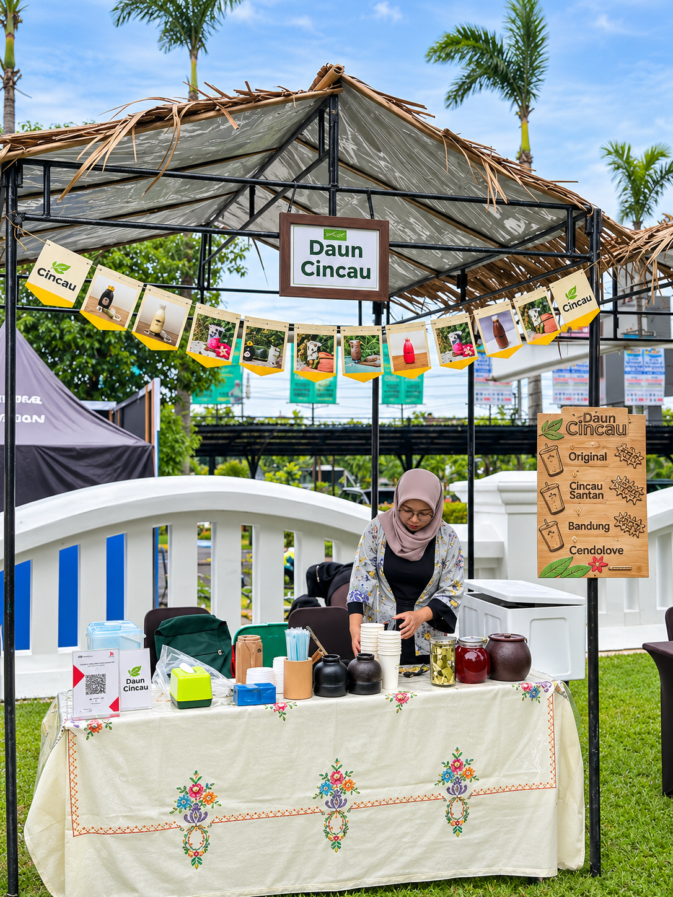
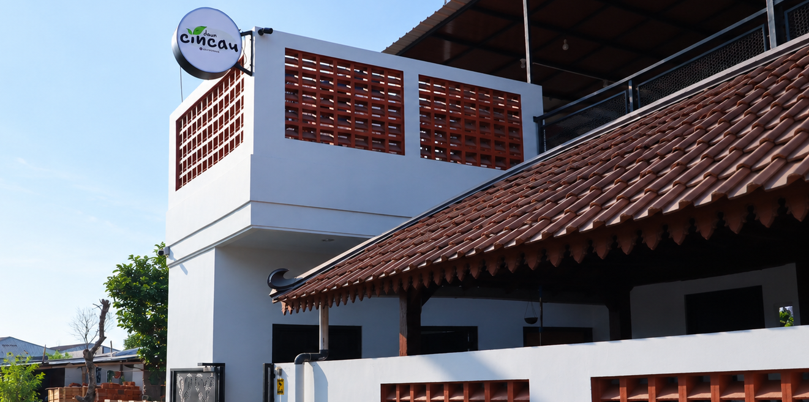

Berawal dari hal sederhana, tumbuh menjadi usaha yang menghadirkan kesegaran alami untuk semua.

Perjalanan kecil yang terus berkembang untuk menghadirkan kesegaran cincau bagi lebih banyak orang.
Memulai usaha cincau dari rumah dengan menawarkan produk melalui WhatsApp kepada lingkungan sekitar.
Memperluas jangkauan pelanggan melalui aplikasi layanan pesan antar seperti GoFood dan GrabFood.
Mengembangkan pemasaran melalui ShopeeFood, Shopee, Tokopedia, GrabMart, dan pemesanan WhatsApp.
Terus mengembangkan produk, meningkatkan kualitas produksi, dan menjangkau lebih banyak pelanggan.
Kami percaya bahwa kualitas produk dimulai dari bahan baku hingga proses pengolahan.
Menggunakan daun cincau yang dipilih dengan cermat untuk menjaga kualitas dan kesegaran produk.
Memperhatikan kebersihan dan kualitas bahan dalam setiap tahapan pengolahan cincau.
Memanfaatkan ampas cincau yang difermentasi sebagai kompos organik untuk tanaman.
Melibatkan petani setempat dalam perawatan dan pemanenan tanaman cincau.
Menjadi usaha olahan cincau yang dikenal luas dengan menghadirkan produk berbahan alami, berkualitas, dan terjangkau sebagai pilihan minuman yang menyegarkan.

Kesegaran alami untuk menemani setiap harimu.
Jelajahi Produk Kami →